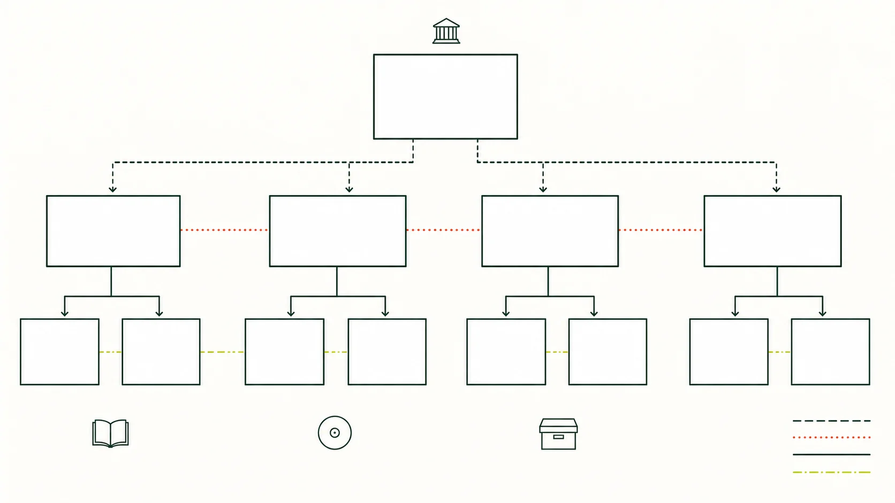

人物與傳承
技藝，在人與人之間流傳。
人物的經歷、師承與作品，留下不同時代的笛樂面貌。專題按文獻交代已知事實；任職、年代與傳承關係有待考證之處，另作說明。
人物資料索引
查看本批 10 個規劃頁面
- 馮子存 L2
- 劉管樂 L2
- 陸春齡 L2
- 趙松庭 L2
- 俞遜發 L2
- 曾永清 L2
- 張維良 L2
- 唐俊喬 L2
- 譚寶碩 L2
- 陳中申 L2
主題插圖（非教學圖）

人物與傳承
人物的經歷、師承與作品，留下不同時代的笛樂面貌。專題按文獻交代已知事實；任職、年代與傳承關係有待考證之處，另作說明。
